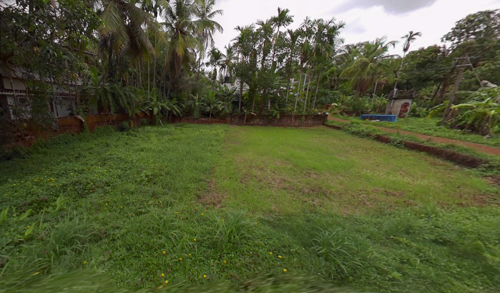
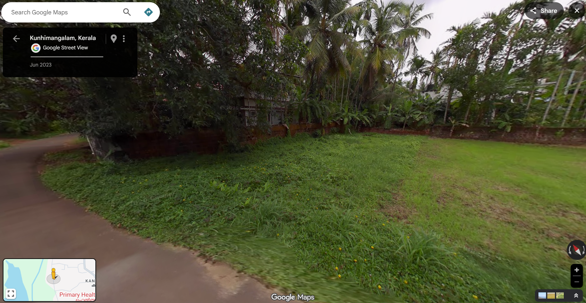
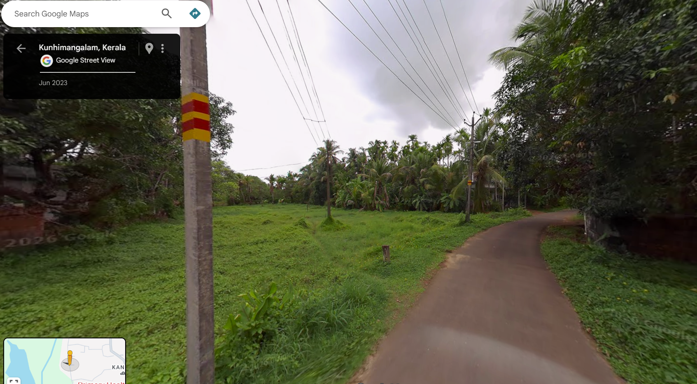
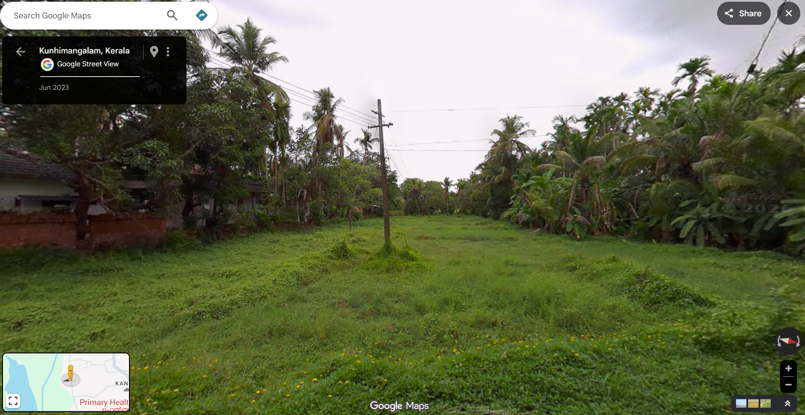

Price: ₹1.64 Cr @ ₹2L/cent
Size: 82 cents (35,719 sq ft)
Location: Payyannur, Edat | View Map
This property sits in a **high-potential micro-market** within Payyannur where land is still undervalued compared to coastal and highway zones.
Its combination of **natural features (trees + water), clean geometry, and access** makes it highly suitable for:
Compared to nearby congested areas, this plot offers **scarcity value** — large, clean parcels with natural advantages are becoming harder to find.